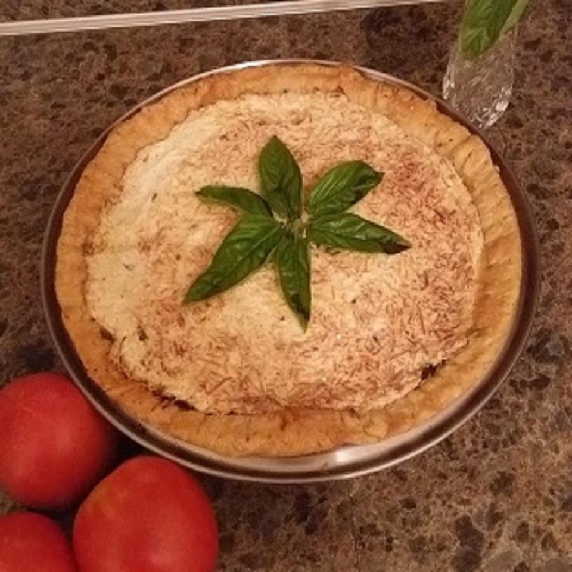

Tomato Pie

How it could look like, when finished
Cheesy tomato basil pie is a summer staple at my house I always make two: one for me and one to give away. Use fat-free mayonnaise to cut down on oliness (and calories!).
Ingredients
- 1 (9inch) refrigerated pie crust (such als Pillsbury
- 1 1/2 cups shredded mozzarella cheese, divided
- 5 Roma tomatoies, or more to taste, cut into wedges
- 1 cup loosely packed basil leaves, coarsely chopped (Optional)
- 2 cloves garlic, minced
- 1/2 cup fat-free mayonnaise
- 1/4 cup grated Parmesan cheese
- 1/8 teaspoon ground white pepper
- 8 whole basil leaves (Optional)
Directions
- Preheat the oven to 230 C°.
- Press pie crust into a 9-inch pan or glass pie plate; fold excess dough under and press to form a thick edge. Cover edges with foil.
- Bake in the preheated oven until light brown, 10 to 12 minutes. Remove from oven and sprinkle 1/2 cup mozzarella cheese over the bottom. Reduce oven temperature to 190 C°.
- Drain tomato wedges in a colander or on paper towels. Arrange tomato wedges in the pie shell. Sprinkle basil and garlic on top.
- Combine remaining 1 cup mozzarella cheese, mayonnaise, Parmesan cheese and pepper in a mixing bowl. Spread evenly over tomatoes; do not spread onto crust.
- Bake in the preheated oven until top is golden and bubbly, 35 to 40 minutes. Cover edges with a ring of foil to keep from overcooking if needed. Garnish pie with whole basil leaves and serve warm.